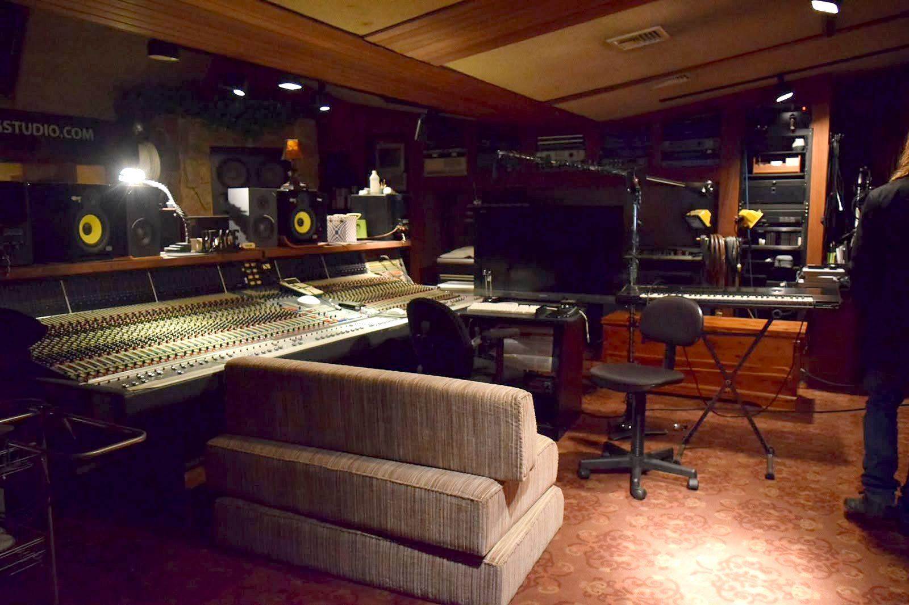

22 August 2025 · Release
“Peace” comes back as a Philly funk record
Four years after the original went out to launch a global peace campaign, The GDVO released Peace (The Instant Philly Funk Mix) — the same Guy Daniel song, rebuilt on a Philadelphia funk rhythm section and running three minutes flat.
The original, cut between City Lights in Farmingdale and Chicago, featured The Chi-Lites and the late Denroy Morgan. Both had already recorded at City Lights, which is how the record came together in the first place.